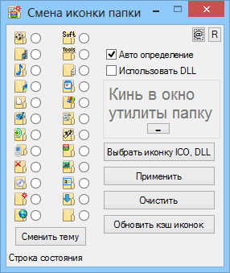

Icon_of_folder
Назначение
Изменить иконку папки.

Взаимосвязанные
icodir
Утилитка для смены иконки папки. Позволяет очень быстро сменить иконки каталогов. Рекомендуется назначение иконки для личных каталогов и в Главном меню программ, выполнив некоторую сортировку ярлыков.
Использование иконок каталогов удобнее, так как визуально легче воспринять иконку чем текст имени каталога, соответственно быстрее происходит визуальный поиск.
1. Авто определение - отметив этот пункт утилита автоматически назначает иконку каталогу перетаскиваемому в окно утилиты. В файле folder_name.txt содержится список каталогов, для которых происходит автоопределение. А в файле themes\default.dll соответствующие иконки (номер строки соответствует номеру иконки). Смотрите также в подсказке переключателей иконки.
2. По умолчанию иконка назначается со ссылкой на DLL, при этом указывается путь к *.dll и номер иконки в библиотеке. Если требуется, видеть иконку папки независимо от других версий OS, то снять галку "Использовать DLL" при этом иконка извлекается в папку.
Если иконка не определилась автоматически или авто определение выключено, то отмечаем иконку и жмём "Применить". Кнопка "Выбрать иконку DLL" позволяет выбрать иконку из стандартных библиотек Windows и применяется автоматически.
Формат desktop.ini позволяет указать цвет имён и фоновую картинку, см. ниже
============================================================
[.ShellClassInfo]
IconFile=Desktop.ico
IconIndex=0
InfoTip=Это подсказка к папке
[ExtShellFolderViews]
Default={BE098140-A513-11D0-A3A4-00C04FD706EC}
[{BE098140-A513-11D0-A3A4-00C04FD706EC}]
IconArea_Image=C:\pic.gif
IconArea_Text=0x0000aa
; IconArea_TextBackground=0xAAFFFF
============================================================